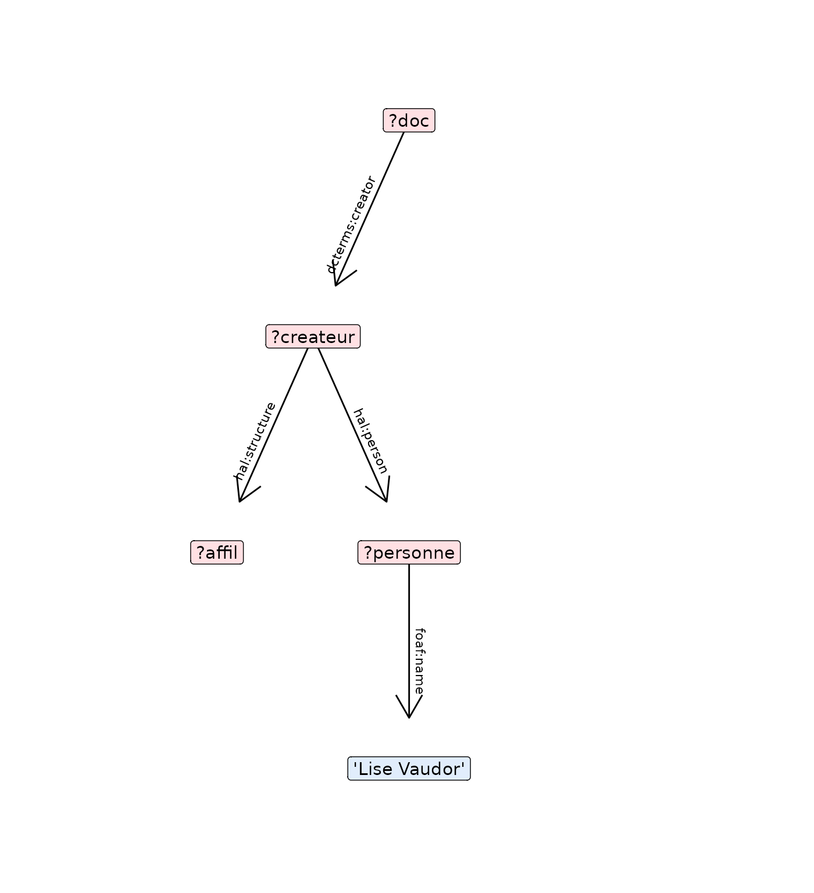
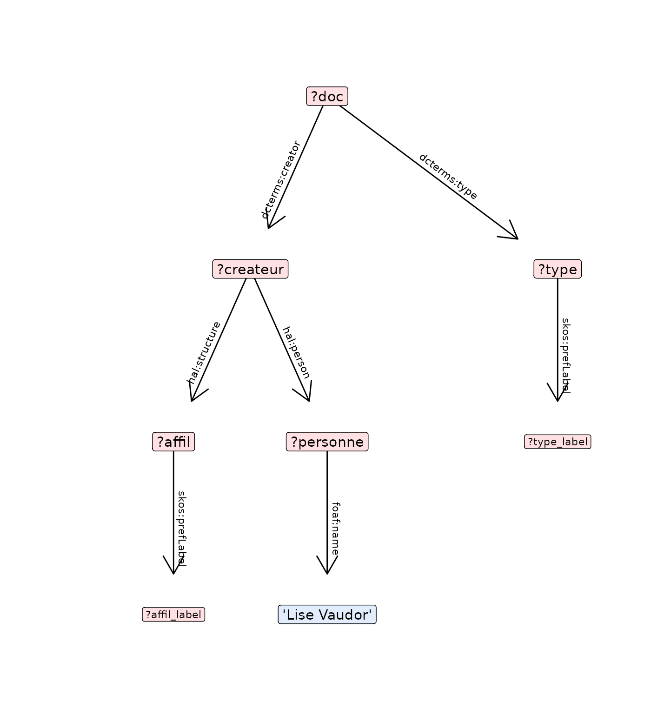

Get started
get-started.Rmdgraph_query: describe query as a graph
graph_query example
query=spq_init() %>%
spq_add("?mayor wdt:P31 ?species") %>%
spq_set(species = c('wd:Q144','wd:Q146', 'wd:Q780')) %>%
spq_add("?mayor p:P39 ?node") %>%
spq_add("?node ps:P39 wd:Q30185") %>%
spq_add("?node pq:P642 ?place")
graph_query(query,labelling=TRUE)
#> $graph
#> # A tbl_graph: 6 nodes and 5 edges
#> #
#> # A rooted tree
#> #
#> # Node Data: 6 × 4 (active)
#> name type step required
#> <chr> <chr> <int> <lgl>
#> 1 "?mayor" unknown 1 TRUE
#> 2 "?node" unknown 3 TRUE
#> 3 "?place" unknown 5 TRUE
#> 4 "?species" unknown 1 TRUE
#> 5 "dog\nhouse cat\nchicken" set 2 TRUE
#> 6 "mayor" set 4 TRUE
#> #
#> # Edge Data: 5 × 7
#> from to triple required step filtered link
#> <int> <int> <chr> <lgl> <int> <lgl> <chr>
#> 1 1 4 ?mayor wdt:P31 ?species TRUE 1 FALSE instance of
#> 2 4 5 {wd:Q144 wd:Q146 wd:Q780} TRUE 2 FALSE values in
#> 3 1 2 ?mayor p:P39 ?node TRUE 3 FALSE position held
#> # ℹ 2 more rows
#>
#> $nsteps
#> [1] 5plot_query_step
query=spq_init() %>%
spq_add("?mayor wdt:P31 ?species") %>%
spq_set(species = c('wd:Q144','wd:Q146', 'wd:Q780')) %>%
spq_add("?mayor p:P39 ?node") %>%
spq_add("?node ps:P39 wd:Q30185") %>%
spq_add("?node pq:P642 ?place")
gq=graph_query(query,labelling=TRUE)
plot_query_step(gq$graph,plotstep=3)example hal
query=spq_init(endpoint="hal") %>%
spq_add("?doc dcterms:creator ?createur") %>%
spq_add("?createur hal:structure ?affil") %>%
spq_add("?createur hal:person ?personne") %>%
spq_add("?personne foaf:name 'Lise Vaudor'") %>%
spq_add("?doc dcterms:type ?type") %>%
spq_label(affil,.languages=NULL) %>%
spq_label(type,.languages="fr") %>%
spq_add("?doc dcterms:bibliographicCitation ?citation") %>% # récupère la citation
spq_add("?doc dcterms:issued ?date") %>%
spq_select(doc,date,citation,type_label)
plot_query(query, layout="tree",flip=TRUE, set_labels=c("hal:structure"="id de labo"), show_step=TRUE)
#> [[1]]#>
#> [[2]]#>
#> [[3]]#>
#> [[4]]
#>
#> [[5]]#>
#> [[6]]#>
#> [[7]]
#>
#> [[8]]#>
#> [[9]]get_label_1
get_label_1("wdt:P31")
#> [1] "instance of"
get_label_1("{wd:Q144 wd:Q146 wd:Q780}")
#> [1] "dog\nhouse cat\nchicken"
get_label_1("wdt:P31/wdt:P279*")
#> [1] "instance of\nsubclass of"get_label
get_label("wd:Q152088",language="en")
#> [1] "fries"
get_label("wd:Q152088",language="fr")
#> [1] "frite"
get_label(c("wdt:P31","wdt:P625","'David Bowie'","?item"), language="fr")
#> [1] "nature de l’élément" "coordonnées géographiques"
#> [3] "'David Bowie'" "?item"
get_label("hal:structure",endpoint="hal")
#> [1] "hal:structure"replace_label
sequins:::replace_label("hal:structure",c("hal:structure"="id de labo"))
#> [1] "id de labo"